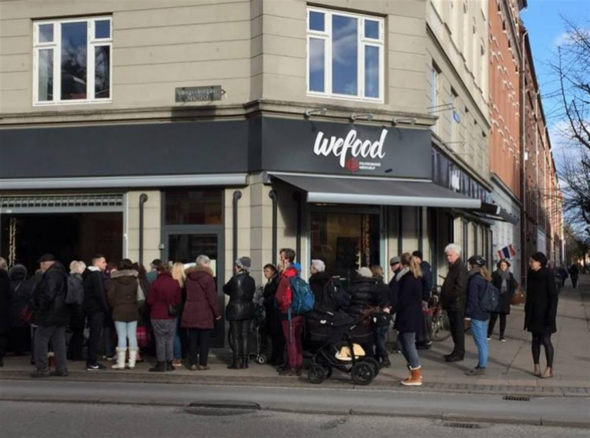
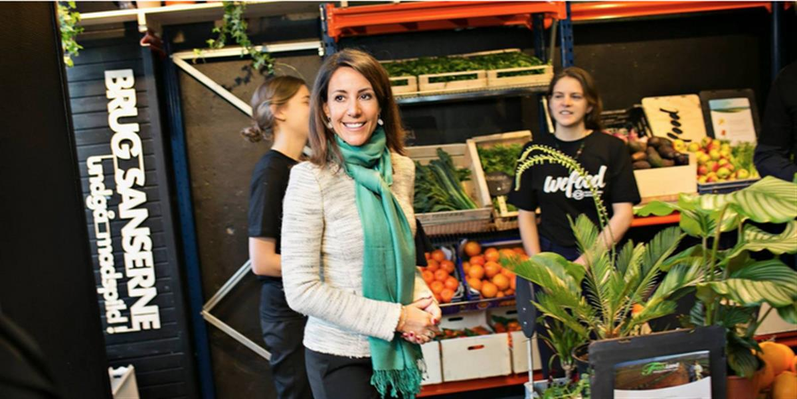

GOT OLD FOOD? DENMARK IS SELLING IT!
Did you know that 1.3 billion metric tonnes of food waste is produced yearly around the world? Did you also know that a charity in Copenhagen has come up with an incredible way to remedy this unfathomable amount of waste?
The rumours are true, the world's first ever food surplus supermarket has opened in Copenhagen. The store, WeFood, aims to reduce the 700,000 tonnes of food waste crated by Denmark's population yearly, by selling surplus foods at 30 to 50 per cent cheaper than average supermarkets. The only catch? The food is past its official expiry date or has damaged packaging that would've caused it to be thrown away at a regular store.
WeFood have formed working arrangements with major supermarket chains, butchers, fruit importers and 'nut bars' across Denmark to collect left over food for sale at the surplus supermarket.
Read more: Cities of tomorrow: Copenhagen
The volunteer based initiative hopes to attract both low-income individuals and environmentally conscious shoppers, and has been receiving incredible international accolades since it opened its doors on Feb. 21st.


Images: WeFood
As a nation, Denmark has already been doing a good job cleaning up its food waste act. The country bins 25 per cent less food than it did five years ago, and has put pressure on many of its supermarkets to sell food near its expiration date at lower prices.
On a wider European level, Denmark's neighbours, France, have recently banned supermarkets from throwing away unsold food, forcing stores to donate unwanted food to charities and food banks.
While this is all amazing news, the global fight to end food wastage is far from over, with food waste increasing by 50 per cent in the US since 1990. However, we need projects like WeFood to offer the much needed inspiration on the matter, and to urge other nations to take look at their own food waste situations.
Take a look at this infographic for some food waste facts that will make you think twice about your dinner leftovers!
Read this next: 10 perfectly good food scraps your probably throwing away
SOURCE: 1 MILLION WOMEN
1 Million Women is more than our name, it's our goal! We're building a movement of strong, inspirational women acting on climate change by leading low-carbon lives. To make sure that our message has an impact, we need more women adding their voice. We need to be louder. Joining us online means your voice and actions can be counted. We need you. We're building a movement of women fighting climate change through the way we live.